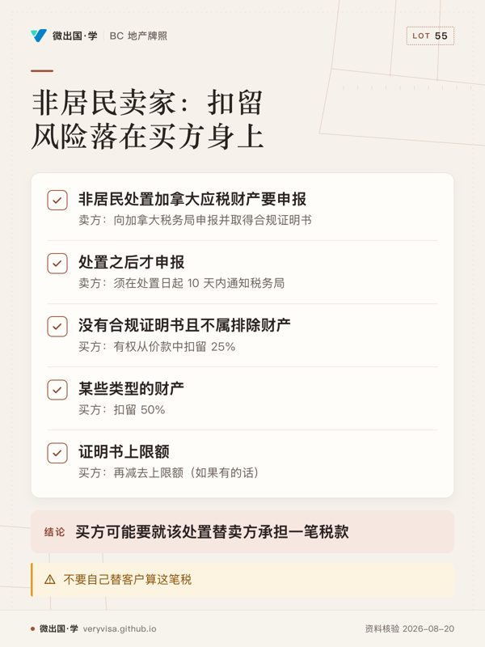

核实日期：2026-09-05。法条一律回 BC Laws 与 Justice Laws 原文（BC 各法当日版本自标 current to 2026-09-01），
机构口径回 LTSA、FINTRAC、CRA、BC 财政厅现行页。出处见文末源表。
签完合同、拿掉全部 subject 之后，持牌人的主要工作确实结束了——但交易还没有发生。
在接受要约到产权登记之间的这一段，有四条彼此独立的法律链条同时收口：产权登记链、税链、透明度与反洗钱链、信托金链。
四条里只要有一条断掉，交割就完不成，而其中两条在 2020 年之后才长出来。
这一章难的不在调整表的算术上——算术三十年没变。难在：
考试口径给的那份「交割文件包」清单，照着它准备今天会被土地产权办公室退件；
考试口径给的那条「接受要约 → 拿掉 subject → 交给过户人」的时间线，中间少了一段不可放弃的撤销期；
而反洗钱那一串义务，是持牌人自己的，不是律师的。
一、制度地位：交割是四条链同时收口
本节回答This section answers 写合同时三个日期谁来定Who sets the three dates when the contract is written
产权登记链由《土地产权法》(Land Title Act) 管。买方的过户人（conveyancer，即律师或公证人）准备 Form A 自由持有权转让书，
在交割日电子提交到土地产权办公室，拿到一个 pending application number（待处理申请号），登记随后完成。
 图：交割四条法律链——产权登记、税、透明度反洗钱、信托金同时收口
图：交割四条法律链——产权登记、税、透明度反洗钱、信托金同时收口
税链由《物业转让税法》(Property Transfer Tax Act)、联邦《所得税法》(Income Tax Act) 与 GST 规则叠成。
物业转让税在申请登记那一刻就要缴，非居民卖家那一侧还挂着一条买方自己的责任。
透明度与反洗钱链是 2020 年之后的新东西，由《土地所有权透明度法》(Land Owner Transparency Act, LOTA)
与联邦《犯罪所得（洗钱）及恐怖主义融资法》(PCMLTFA) 两头夹住：前者卡在登记这一步，后者卡在持牌人自己的记录上。
信托金链由《地产服务法》(Real Estate Services Act, RESA) 与其规则 (Real Estate Services Rules,
B.C. Reg. 209/2021) 管：定金进哪个账户、什么时候能动、佣金什么时候算「赚到」，全部有明文。
ℹ️
为什么持牌人要懂一段自己不做的流程
交割由过户人执行，但客户会打电话给你。而且考试口径举过的那类纪律案例说明了一件事：
交割期的时间安排是在你写合同的时候定下的——占有日、交割日、调整日写成什么样，
直接决定过户人有没有可能按时完成。写合同的是你，扛纪律后果的也是你。
二、2026 年的一条真实时间线
本节回答This section answers 考试时间线没有撤销期The exam timeline has no rescission period
撤销期只影响住宅物业，而且它插在最前面，不是插在交割那一头。制度本体（谁有这个权利、
怎么送达通知、哪些物业不适用）另章处理；在交割这一格只要记住它带来的三个后果：
- 接受要约之后的头 3 个营业日，这笔交易还不是确定的。营业日不含星期六与法定假日（BC《Interpretation Act》的法定假日定义包含星期日），
且从接受之日的次日开始起算。
- 这个权利不能放弃（B.C. Reg. 175/2022 s.7）。合同里写「买方放弃撤销权」那一句是无效的。
- 买方真的撤销时，要向卖方付合同价的 0.25%，且这笔钱从定金里直接扣付给卖方，余额退还买方
（B.C. Reg. 175/2022 s.6）。这是定金第一次可以在没有双方书面协议、也没有法院命令的情况下被动用。
⚠️
「3 天」不是 72 小时，也不是 3 个自然日
规程把《物业法》s.42 里的「days」定义为 business days，而 business day＝除星期六与法定假日之外的日子。
星期五下午接受的要约，撤销期要跨过整个周末。合同上那个交割日排得太紧，
就会出现「撤销期还没走完，客户已经在搬家」的场面。涉及具体日期时回官方页数，不要口算。
三、交割文件包：考试口径那张清单少了一份
本节回答This section answers 考试不考不申报就被拒收The exam does not test refusal for a missing filing 本章考题 4Question 4
考试口径列的那份包裹是：卖方签好的 Form A（电子件）· 双方签署的两张调整表 · 买方签署的物业转让税申报表（电子件）·
其他必需文件（如共管物业的 Form F 缴款证明、买方新设按揭的 Form B）· 买方在过户人信托账户里的补足款。
2026 年这份清单前面还要加一份：透明度申报（transparency declaration）。
《土地所有权透明度法》自 2020 年 11 月 30 日起要求：申请登记「土地权益」时，
每一位受让人都必须向登记管理人提交一份透明度申报，说明自己是不是申报主体（reporting body）；
如果是，还要说明属于三类中的哪一类——相关公司、相关信托的受托人、相关合伙的合伙人（LOTA s.10(1)）。
这里的「土地权益」是有定义的：自由持有权（fee simple）· 终身地产权 · 期限超过 10 年的租赁下的占用权 ·
买卖协议（agreement for sale）项下的占用权或要求转让自由持有权的权利。按揭不在其中。
申报主体还要另交一份透明度报告（transparency report），写明自身与其权益持有人的信息（LOTA s.12(1)）。
✕
不交申报，登记官必须拒收
LOTA s.11(1) 用的是「must refuse」：受让人没有随申请提交透明度申报的，登记官必须拒绝接受这份登记申请。
不是可以拒，是必须拒。整笔交割卡在这里，而买卖双方之间的合同义务并不会因此暂停。
在申报或报告里提供虚假或误导信息，罚则见 LOTA s.92：非个人是 $50,000 与该物业评估值 15% 两者取大者为上限，
个人是 $25,000 与 15% 取大者。这不是象征性罚款。
个人用自己名字买房，也要交透明度申报——只是申报内容是「我不是申报主体」，不必再交报告。
中文网上常见的「透明度登记只管公司和信托」这句话，把「申报」和「报告」混成了一件事。
登记本身的其他几个时间点，按 LTSA 的口径：2020-11-30 起必须申报，2021-04-30 起公众可以检索，
2022-11-30 是登记前已经持有权益的申报主体补交报告的截止日。
电子提交与「谁能签」
《土地产权法》第 10.1 部管电子提交。文件可以由申请人、申请人的律师或代理人、
或该律师／代理人授权的人提交（s.168.2(1)）；本来要求「以特定方式签署或有见证」的文件，
只要由一名 designate（指定认证人）按 s.168.41 认证并电子提交，那个要求就算满足。
designate 的类别由土地产权主任指定（s.168.4）——这就是为什么普通人不能自己在网上把 Form A 交上去，
而收费办理过户只能由律师或公证人做。
designate 电子签名的法律含义是他在担保两件事：纸质签署本已经按要求签署并见证过，
且这份签署本（或其真实副本）在他手上（s.168.41(4)）。这条也解释了交割日的一个常见场景：
卖方明明人在外地，Form A 却能在当天提交——纸质签署本早就签好寄到了过户人处。
ℹ️
待处理申请号为什么值钱
登记要 10–15 个营业日才完成，钱却在交割当天就付出去了。撑住这个时间差的，
一是律师之间的承诺（undertaking），二是《土地产权法》s.27(1) 的规则：
收费权益的登记，自登记官收到登记申请的日期与时间起，对其后每一个与该产权打交道的人产生通知效力。
换句话说，抢到的是提交那一刻的排序，不是审核通过那一刻。所以过户人拿到待处理申请号才敢付款。
四、钱怎么走：定金、佣金、按揭净额
本节回答This section answers 定金只听书面或法定口子A deposit moves only by writing or by statute 本章考题 5Question 5
定金付给买方的经纪行，进经纪行信托账户。 RESA s.26 要求经纪行在 BC 的储蓄机构开立并维持计息信托账户；
s.27 要求持牌人把收到的一切客户款项立即交给经纪行，经纪行立即存入信托账户。
存进去之后，经纪行是 stakeholder（保管人），不是任何一方的代理人。 RESA s.28(2) 明写：
除非双方另有书面约定，否则经纪行以保管人身份持有这笔钱。这句话的实际含义是——
交易谈崩时，经纪行不能听卖方的、也不能听买方的，它谁的话都不能听。
能动这笔钱的口子，RESA s.30(2) 只开了三个：法定的几种情形（付错款、利息、已赚取的佣金、
无人认领款、缴入法院、按法院命令支付）· 交易双方的书面协议 · 或依《物业法》s.43 下的规程。
第三个口子是 2022 年之后才有的，正对着撤销权：买家撤销时那 0.25% 从定金里划给卖方、
余额退买方，规程本身允许从经纪行信托账户中支取（B.C. Reg. 175/2022 s.6(3)）。
佣金什么时候算「赚到」？ 现行规则给了明确答案：以保管人身份持有的款项，
在一般买卖里可在「转让文件被提交到土地产权办公室申请登记之日」支取
（Real Estate Services Rules s.61(2)(c)）。租赁交易另有三选一的最早日规则；
如果服务协议约定了一个更晚的时点，从约定（s.61(3)）。
🔧
账面上的佣金和现金流里的佣金是两件事
卖方的调整表上，佣金是一笔 debit，从卖方所得里扣。但现金层面它通常由买方经纪行手上的定金支付——
因为卖方在上市合同里授权了这么做。定金大于佣金时，差额转回交割方；定金小于佣金时，缺口从卖方所得里补。
给客户讲这一段时，最容易被听成「定金就是佣金」。它们是两笔完全不同的钱：
定金是买方按合同付的、构成价款的一部分；佣金是卖方按上市合同欠经纪行的服务报酬。
记录义务也换了条号。 考试口径引的是旧《议会规则》s.5-4；现行 B.C. Reg. 209/2021 里，
经纪行必须留存的交易记录在 s.84：买卖合同（s.84(1)(a)）· 持牌人经手的要约与合同转让要约（s.84(1)(a.1)）·
出具给当事人的会计报表（s.84(1)(b)）· 撤销通知（s.84(1)(c)，B.C. Reg. 176/2022 增订，2023-01-03 起）。
保存期 7 年（s.92(1)）。另外，为买方起草住宅要约、或向卖方转达住宅要约时，
持牌人必须按监管方核准的表格向客户披露撤销权，且披露内容必须包含
「不可放弃」「期限」「0.25% 怎么算怎么付」「余额如何退还」「哪些情形不适用」五项（s.57.1）。
五、调整表：判断法则与一个算到底的例子
本节回答This section answers 双方都有基本补助时怎么分摊How to prorate when both have the basic grant 本章考题 1Question 1 本章考题 2Question 2 本章考题 3Question 3
调整表（statement of adjustments）就是两张分栏表：买方那张算出「交割还要再拿出多少现金」，
卖方那张算出「交割那天能收到多少现金」。栏名是 debit 与 credit，但含义与会计课上的相反，
所以不要用会计习惯去套：
融资项目怎么落表，是最容易记混的一格：
规律只有一句：买方的钱从哪来，卖方不关心；卖方拿走多少，买方也不关心。
只有当同一笔钱在两边同时改变现金位置时，它才会同时出现在两张表上。
情景：陈女士把房子卖给林先生
成交价 $1,200,000。林先生付了 $50,000 定金，在买方经纪行的信托账户里。
林先生新借了一笔 $800,000 的按揭，放款人从放款里扣掉 $1,500 的评估与手续费。
过户费 $1,200 由买方承担。上市佣金按成交价 3% 计。
陈女士名下有一笔余额 $520,000 的按揭要在交割时清偿，放款人收 $300 解除费。
陈女士已经缴清了本年度全年地税 $4,380。调整日是 9 月 1 日，且按合同买方承担调整日当天。
林先生不是首次购房者、也不适用新房豁免，物业转让税照常缴。
第一步：地税分摊。 买方要承担 9 月 1 日到 12 月 31 日：9 月 30 天 ＋ 10 月 31 天 ＋
11 月 30 天 ＋ 12 月 31 天 ＝ 122 天。
全年按 365 天算，每天 $4,380 ÷ 365 ＝ $12.00。买方应摊 $12.00 × 122 ＝ $1,464.00。
因为税是卖方替全年垫付的，这一笔在买方那边是 debit、在卖方那边是 credit，两张表上是同一个数。
第二步：物业转让税。 按阶梯：前 $200,000 的 1% ＝ $2,000；
超过 $200,000 到 $1,200,000 的那 $1,000,000 按 2% ＝ $20,000。合计 $22,000，落在买方表的 debit。
买方的调整表
买方那张表的 credits 一侧合计 $850,000，两栏合计同为 $1,226,164，
所以交割应补 ＝ $1,226,164 − $850,000 ＝ $376,164.00。
卖方的调整表
第三步：把资金闭环验一遍。 两张表各自配平只证明了算术，不证明钱真的够。
把交割当天流进流出买方过户人信托账户的钱摆开看：
两边相等，交易能完成。这张闭环表不出现在任何标准表格里，但它是判断一笔交割做不做得成的唯一方法：
两张调整表都配平、闭环却不平，说明有一笔钱被算了两次或者根本没有来源。
⚠️
定金为什么不出现在卖方表上
因为它在买方经纪行的信托账户里，陈女士从来没有收到过。卖方表算的是「交割那天她能拿到多少现金」，
她拿不到的钱不进她的表。如果买方是把定金直接付给卖方的，情况反过来：
那是买方的 credit、卖方的 debit。这一条几乎每张卷子都会考。
ℹ️
地税的三种局面，方向各不相同
① 卖方已缴全年：买方 debit ／ 卖方 credit（同一个数，如上例）。
② 税还没到期、将由买方缴：卖方要为 1 月 1 日到调整日前一天的那一段付钱给买方，
于是买方 credit ／ 卖方 debit。税单还没出时按上年数加估算涨幅计算，实际税单出来后由双方自行找补。
③ 税已到期未缴：过户人从卖方所得里直接缴清，全年税额加滞纳金作卖方 debit，
再把买方那一段作卖方 credit ／ 买方 debit。
闰年按 366 天算。方向记混的代价是数字符号反了，卷面上直接零分。
业主补助（home owner grant）怎么进调整
分摊地税之前先要问一句：这一年的补助算谁的。业内惯例是：
双方都不合资格就按毛税额分摊；双方都合资格拿基本补助、但至少一方不合资格拿附加补助，
就按扣掉基本补助后的税额分摊；双方都合资格拿附加补助，就按扣掉附加补助后的税额分摊。
惯例没变，金额与申请路径变了。 2026 年的现行口径：基本补助 $570；
长者、退伍军人、残障人士等适用的附加补助合计 $845；房产评估值门槛 $2,075,000，
超过门槛可能只拿到部分补助。领基本补助的业主本年度至少要缴 $350 物业税，
领附加补助的至少要缴 $100。补助每年要向省里单独申请，而且官方明写
「你在补助申请上填的信息不会分享给你所在的市政府，也不会分享给 BC Assessment」。
另有一条已经写进官方页的变化：2027 年 1 月 1 日起，北部与乡村物业原有的 $200 附加额取消，
全省统一为基本 $570、长者等合计 $845。
六、非居民卖家：调整表上考试口径没有的那一行
本节回答This section answers 考试调整表没有扣留一行The exam statement has no withholding line
卖方不是加拿大税务居民时，交割里会多出一整套动作，而且风险落在买方身上。
《所得税法》s.116 的机制是：非居民处置「加拿大应税财产」（taxable Canadian property，
包含位于加拿大的不动产），要向加拿大税务局申报并取得合规证明书（certificate of compliance）。
处置之后才申报的，须在处置日起 10 天内通知税务局。
买方那一侧的后果：没有拿到合规证明书、且该财产不属于「排除财产」的，
买方可能要就该处置替卖方承担一笔税款；此时买方有权从价款中扣留 25%
（某些类型的财产是 50%），再减去证明书上限额（如果有的话）。
✕
这一行不写进合同，扣不下来
交割当天过户人才发现卖方是非居民，钱已经按调整表付出去了，追不回来。
持牌人在这一格能做的动作只有一个：上市与写要约的阶段就问一句卖方的税务居民身份，
并把「若卖方为非居民，买方有权按《所得税法》s.116 扣留相应款项直至取得合规证明书」
这类安排交给客户的律师去落进合同。不要自己替客户算这笔税、也不要自己判断谁算非居民——
税务居民身份不等于国籍，也不等于有没有枫叶卡。识别 ＋ 转介，是这一格的正确动作。
七、反洗钱：这一串是持牌人自己的义务
本节回答This section answers 无经纪的对方也要做信息记录An unrepresented party also needs an information record
联邦《犯罪所得（洗钱）及恐怖主义融资法》及其条例把地产经纪与销售代表列为申报实体。
它管的不是过户人，是你。核心义务四类：
一、合规计划。 经纪行必须建立并执行合规计划，含风险评估。
二、身份核实与客户尽职调查。 特定交易与活动要核实个人与实体的身份，
另有商业关系、持续监控、受益所有权、第三方判定、政治敏感人物（PEP）判定等一整套要求。
三、记录。 三种记录在交割这一段最常出现：
- 信息记录（information record）：地产经纪与销售代表要为每一个自己代理买卖的当事人
保存一份信息记录，并且要为交易中任何没有地产经纪代理的一方也保存一份。
客户是公司的，还要留一份公司章程或附例中「谁有权代表公司签署本交易」的部分。
- 收款记录（receipt of funds record）：收到任何金额的资金都要留一份记录，
含日期、付款人信息、金额、其中现金部分的金额、收款方式、所涉账户等。
你的客户把钱交给了对方的经纪时，保存记录的责任在持有该客户关系的那一方。
- 大额现金交易记录与申报：收到 $10,000 及以上现金要留记录并向监管机构申报，
适用 24 小时合并规则；大额虚拟货币等值 $10,000 同理。
四、可疑交易申报。 这一项销售代表和经纪行都要做——其余各项由经纪行承担，
唯独可疑交易申报是两头都跑不掉。
保存期 5 年（自记录创建之日起）。注意它和省一侧的 7 年（Real Estate Services Rules s.92(1)）
不是一回事，两条都要满足，取长的那条办。
⚠️
「没有代理的对方」最容易漏
双方各有经纪时，各留各的信息记录，直觉是对的。
但对方是自己上阵、没有经纪时，那份信息记录要由你来做——
这时候他不是你的客户，你甚至还要向他做「未获代理方风险披露」。
「不是我的客户所以不归我记」是这一格里最贵的误解。
八、税与费在交割上的位置
本节回答This section answers 住过的住宅转售一般无消费税A resale of a lived-in home generally has no GST
物业转让税：《物业转让税法》s.2(1) 说得很硬——在土地产权办公室申请登记应税交易时，
受让人必须缴税并按规定方式报送申报表，无论该交易是否依本法免税。
经第 10.1 部电子提交的申请，税必须用电子方式缴、申报表必须是电子申报表（s.2(1.1)）。
⚠️
免税不等于免申报
首次购房者豁免、新房豁免、新建长租房豁免……不管落进哪一档，申报表照报，
只是在表上选对应的豁免代码。中文攻略里「首次购房免税所以不用报」是错的。
税率的完整讨论另章处理，这里只补一条与调整表直接相关的：
考试口径那张表是 1%／2%／3% 三档，现行法在三档之上还有一档——
交易标的含住宅物业、且住宅物业价值超过 $3,000,000 的，
超出 $3,000,000 的那部分另按 2% 加征（《物业转让税法》s.3(1)(d) 与 s.3.01(4)）。
高价住宅的调整表上少这一笔，买方交割当天就会差钱。
GST：新建或大幅翻新的住宅由建商出售属于应税供应；
已被占用过的住宅转售一般属于免税供应。所以二手房的调整表上通常没有 GST 这一行，
楼花与新盘则有——这也是新盘交割最容易和客户吵架的一格。
炒房税：短期持有出售的利润另有一个省级税种，识别它是上市阶段的动作，不是交割日的动作。
九、交割失败与延期
本节回答This section answers 负担没清或放款不到就停An open charge or a missing advance stops completion
交割做不成的常见原因就那么几类：产权上冒出未清除的负担（例如建筑留置权申索）·
按揭放款没到位 · 买方补足款不到位 · 透明度申报或报告有瑕疵被退件 · 非居民卖家的合规证明书没下来。
考试口径那条时间安排上的告诫在 2026 年只会更成立：交割程序本身要跑好几个小时，
所以占有日不该和交割日同一天；写成同一天的，更不该在合同占有条款里写「中午」。
同一个客户「上午卖旧房、下午买新房」排在同一天，也是给自己挖坑。
这不只是稳妥问题——考试口径引用过因为提前一天把钥匙交出去而被纪律追究的案例，
占有日必须严格照合同执行。
🔧
撤销 ≠ 违约
买方在 3 个营业日内依法撤销，付掉 0.25% 就干净收场，不是违约，卖方拿不到别的损害赔偿。
而拿掉 subject 之后、撤销期之外再毁约，那是另一回事，走的是合同法的违约路径。
给客户讲这两件事时不能混成一句「反正可以反悔」。
十、柜台上怎么做
本节回答This section answers 收费过户只能律师或公证人Paid conveyancing is only for a lawyer or a notary
- 写合同的时候就把交割排好：交割日、调整日、占有日三个日期分开想，
占有日不早于交割日；撤销期与拿掉 subject 的期限分开算，别叠在同一个周末上。
- 住宅要约必做撤销权披露（Real Estate Services Rules s.57.1），用监管方核准的表格，五项内容一项不少。
- 收到的每一笔钱立刻交给经纪行（RESA s.27(1)），并做好收款记录。
现金 $10,000 及以上另有申报义务，别拆单，24 小时合并规则会把拆单合起来看。
- 对方没有经纪时，替他做一份信息记录，同时做未获代理方的风险披露。
- 上市阶段问三个问题：卖方是不是加拿大税务居民？持有这套房多久了？买方是不是公司、信托或合伙？
三个问题分别对应 s.116 扣留、炒房税、透明度报告，全都会影响交割能不能按时完成。
- 把客户送到过户人手上，然后闭嘴。调整表怎么算、承诺怎么给、哪一笔该走信托，
那是律师或公证人的执业范围。你要懂到能听懂客户转述、能看出哪里不对劲，
但收费办理过户只能由律师或公证人做。
- 文件留 7 年（省规则），反洗钱记录留 5 年（联邦），两条都要满足。
考试口径（©2020）vs 2026 现行
本节回答This section answers 考试物业转让税只有三档The exam property transfer tax has only three brackets
术语双语对照
源表（本篇判据）
本篇有意没给的数字（没读到官方原文，以官方现行页为准）
- 2026 税年北部与乡村业主补助的具体金额。官方页只写「2027-01-01 起 $200 附加额已取消」，
由此可知 2026 税年该附加额仍在，但三大都会区之外的当年具体金额本篇不给数值。
- 物业转让税首次购房豁免与新房豁免的现行门槛值、外国买家附加税的现行税率与适用区域。
本篇只指出「免税也要报表」这条程序规则与超 $3,000,000 那一档的存在，税率细节不在此给。
- GST 在楼花与新盘交割上的具体计算与回扣门槛。本篇只给「新房应税、二手住宅一般免税」这条分界。
- 土地产权办公室与透明度登记的现行收费标准。收费表会调整，本篇不给数值。
- 加拿大税务局合规证明书的实际处理周期。官方未公布承诺时限，本篇不给「几周」这类数字。
本页知识卡
不看正文也能拿到这一节的核心内容：先看导读，再看图。点图放大，左右翻页。
放大 ⤢交割对照里既有新增义务，也有比例、年限和税阶梯变化- 先看先扫带金额、比例和年限的行；这些最容易把历史口径带进现行判断。
- 易漏业主补助金额同；本卡没画申请方式、登记拒绝与佣金时点，仍要回正文核对。
- 下一步去讲义，按题干时期把每一行归到历史列或现行列。
详情与分享 →
放大 ⤢没有合规证明书且不属排除财产，风险落在买方- 先看先看结论条，再倒推哪些事实会让交割款需要被留住。
- 易漏税务居民身份不等于国籍，也不等于有没有枫叶卡；不要自己判断谁算非居民。
- 下一步去练习，带着「何时触发扣留」的问题再做交割题。
详情与分享 →
本站依据官方原文自撰 · 出处见正文链接